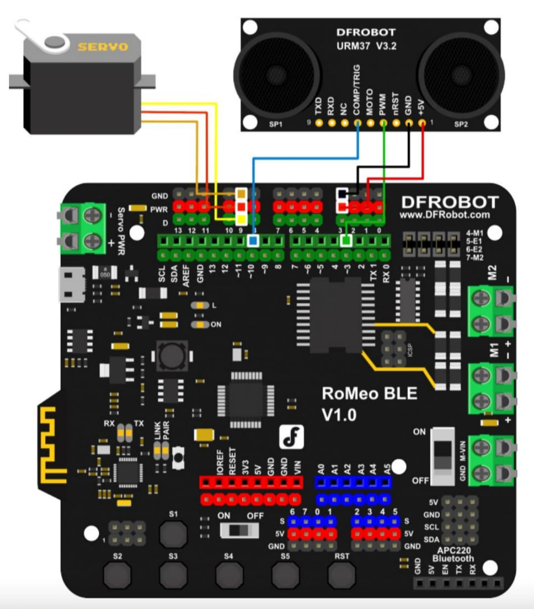

Tableau des Connexions (Pins)
| Composant Matériel | Broche Arduino (Pin) | Type de Signal | Description / Rôle |
|---|---|---|---|
| Servo-Moteur | D9 | Sortie (PWM) | Gestion orientation ultrason. |
| Capteur URM37 (Trig) | D10 | Sortie Digitale | Déclenchement ultrason. |
| Capteur URM37 (Echo) | D3 | Entrée (PWM) | Lecture distance. |
| Moteur Droit (Vitesse) | D5 | Sortie (PWM) | Vitesse moteur droit. |
| Moteur Droit (Direction) | D4 | Sortie Digitale | Sens moteur droit. |
| Moteur Gauche (Vitesse) | D6 | Sortie (PWM) | Vitesse moteur gauche. |
| Moteur Gauche (Direction) | D7 | Sortie Digitale | Sens moteur gauche. |
Schéma de Câblage Fritzing
